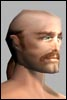

| Pages (14): « First ... « 4 5 [6] 7 8 » ... Last » |  Last Thread Next Thread Last Thread Next Thread  |
| Author | Thread |
| Avarael Phear Leet  | My input... As a Nanotech nanomage, level 79: "Do the professions with an adequate number of hit-points to "tank" (survive with monsters bashing them) have enough ways to keep the monsters focused on them?" At the moment, I'd have to say "No". My main nukes (currently Lesser Coronet of Frost, Ol' Faithful and Energised Collapse) generate aggro to the point that, regardless of what the tanks do, at some point in 95+% of the fights I go into, the mob turns to me and starts pounding away. As it stands, my only solution is to use the various health buffs/shields (Doc's, Enforcer's and my own) to toughen myself to the point where I can tank long enough to either finish the fight, wipe the mob's mind with Bewilder or stop casting and hope that someone else attracts its attention. (On solo missions, we nanomages usually have to take the pain anyway because of the tight confines, but that's another, though linked, matter) Solution: My gut reaction is to say "turn down the aggro from NT and Doc nukes/heals". That should make it easier for the non-tank classes to avoid aggroing the mob that's hooked up on the tank whilst NOT making us dependent on the tank being a cookie-cutter character loaded to the max with hate generation gear. "Do the professions that heal (Doctors, Martial Artists and Adventurers) have any use / purpose in the team? Do you really need a healer when the monsters drop in 5-10 seconds?" Do docs have any purpose? I'm shocked that you're even ASKING this question, Gaute! I've lost count of the number of times a medic has saved my character's life. Do we need a medic when the mobs drop in 5-10 seconds? It depends on the situation. If a team is fighting an individual mob, killing it in 5-10 seconds and then has enough time to recharge and heal, then the answer is probably no. Of course, they're probably not engaged with anything much higher than a single yellow mob anyway. When I'm teamed, we generally do one of two things. We either go hunting or we take on a 90-100% difficulty mission. In either case, the fights we get into last FAR longer than 10 seconds, so the doc has a chance to shine. Note I say the fights, not the mobs - with multiple mobs involved, we might be able to drop individuals in 10 seconds (extremely rare, but it happens) but the rest are still beating away and the fight is still going. "A natural follow up question here is: Should we increase the unpredictability of monster spawns so that they are more "surprising", and different - so that more healers are needed. (More on this later.)" I can think of several things you mean by this - and I'm not sure I like any of them. Adjusting the monsters so that "more healers are needed" equates, at least in my book, to "make the monsters do more damage". Unfortunately, the mobs don't distinguish between a solo player and a team - they fight all out, regardless of the situation. The end result will be that soloing becomes even harder - and it's already difficult. As for teams, well, most teams try to get at least one or two doctors/medics already. If we need even more (say two or three dedicated medics) in a team, then where does that leave the other professions? As for "surprising", what do you mean by that? "Do the "crowd control" (the ability to temporally suspend monsters from battle by "freezing" them, "slowing" them down, or totally "wiping" their mind) professions have any use? Do you need a Bureaucrat, Agent, Fixer or Trader to keep monsters at bay?" The mesmerise-type (aka mezz, mind wipe and Jedi-mind-trick) nanos are useful, but only in specific situations. As an NT, I use Bewilder if either (a), I'm soloing and need to recharge my nano (this ties into the percieved (actual) problems that Humidity extractors work, but don't provide enough nano, even with a nanomage) or (b) I'm in a fight with multiple mobs and need to put some of them out of the fight to give me/the team a chance. Roots only work with melee based mobs. Since every ranged mob in the game seems to have a range of 40m, by the time you can hit them with the root, they can hit you with their gun. I've never seen anyone bother with a slow/snare nano against a mob. This could well be a good indicator of how effective they're felt to be, but I leave it to players with more experience of these nanos to make comments. There's one important caveat on the calms and the roots. Everyone in the team has to know not to hit the mobs that have been calmed or rooted, or it breaks. It's sunk into most people, but could someone please tell the auto-attack function? Do we NEED the classes you listed? Not when things are relatively under control - and nor should we - but the option's an excellent one to have when things get bad. (By the way, you forgot that Nanotechs have both roots and calms. An indication of how much attention the development team's paid the profession of late?) "Does support people have any real use? I have noticed many players on low levels having an inadequate number of NCUs to really take advantage of the beneficial nano programs ("buffs")." Oddly, I never had a problem with NCU space until about level 70, and Layered Protection. At 79, I have 115 NCU, which I could probably get to about 135 if I take my range extender out. Even with that, NCU space is tight, but manageable...I just have to accept that I'm not going to be able to run every buff I want to. But yes, support people are useful. Doc health buffs have got me through most of the last week's fighting without too many deaths. At low levels, I'm not sure that NCU capacity is a problem. At high levels...well, I'm feeling a slight squeeze. Anyone else? "Do you meet monsters that require skill and tactics to fight other than in the static dungeons?" YES. The teams I'm in take on level 120-140 missions quite regularly. We're often level 70-100. Skill and tactics (or at least, a certain level of them) are a prerequisite for surviving, never mind clearing the mission out. cson is right about the higher level game. Running into a caster mob that can kill with one nuke is a game-breaker - the ONLY way to stop that is to kill the mob as quickly as you can and hope that you get lucky and it doesn't cast its super nuke. Incidentally, do nano-skill debuffs work on mobs? Because in the long while that I've been using Lesser Coronet of Frost, I have NEVER seen its debuff side effect achieve anything. -60 to all nano skills ought to have some effect, but the mobs don't even slow down their casting... "Would you like us to add them, or would that seem like we are reducing your capabilities to solo?" Add them? They're already there! - and yes it would reduce our (already low, in the hgier level game) capability to solo IF we had to fight them to make soloing viable. Actually, since "require skill and tactics to defeat" is usually a paraphrase for "needs several characters to bring down and is still hard to beat", ditch the "seem like". It WOULD reduce the capability of a player to solo if they had to solo such mobs. (Incidentally, does this mean that you think the current mobs DON'T require skill and tactics to defeat?) "Do you have enough time for socialisation?" Yes, *if* we want to. Not having *compulsory* downtime is one of the things I like about AO. If I want to beat on the mobs non-stop, I can. Equally, if I want to take it slower and socialise, I can do that as well. All I have to do is not steam headlong into the next fight. As it stands, AO can be as fast paced as you like or as leisurely as you like. I can't see a need to change anything in this respect. "[b]I wouldn't dream of changing the rules in such a way that you would be less effective in what you do, or "nerfing" your abilities[b]. What I could consider would be to make life less predictable, and in turn more rewarding. In addition there should be new ways of fighting so that tactical abilities and cooperation are more frequently needed. " (Emphases mine) Gaute, to say that cooperation is more frequently *needed* implies a nerf, or at least a partial nerf, to soloing. This doesn't jibe with the first sentence in that quote. Was "needed" perhaps the wrong word to use there? By all means introduce new ways of fighting - but don't make them necessary - allow the current methods to work. "Give monsters a more complex AI when you meet them with a team. Let them pick dangerous opponents, basically be "nastier", more challenging... (More fun?)" Erm...first define dangerous opponent. When a mob is facing a team, what's the most dangerous opponent it faces? Answer: The medic. Remove the medic and it's a LOT easier to take out the rest of the team, since they now lack most of their ability to regenerate damage. If the medic is healing, it effectively doubles or triples the rest of the team's hitpoints. If the mobs figure this out, then Docs will go straight to the top of every mob's hate list. Regardless of Mongo Slams, Aggression Enhancers or any other aggro-generator. The moment someone heals someone else, they will go straight to the top of the mobs hate list because the mob will know that they represent the biggest threat. Something of a profession breaker I dont recall anything saying that Docs were supposed to be tanks. Go through each profession and make sure it has something unique, or at least very good, to contribute to a team in a fight. Wasnt this the whole idea of having multiple, distinct professions? IMHO, the professions are a thread in their own right Include different team-missions. Finally turn on the team-mission booths and give them tougher monsters, more of them, better loot and several levels. Maybe with a boss at the end? + Multiple reward and tokens. Yes please. As it stands, a team mission is a 100% solo mission. Fun and rewarding, but whats being proposed here sounds good. Let me stress again that this should in no way change the way you solo, or your ability to solo. Those aspects should remain as good as they are today. Thats nice but the general opinion of everyone I speak to much above 70 is that soloing is currently unviable. Soloing is in need of a boost, possibly more so than grouping. |
 January 22nd, 2002 21:51 January 22nd, 2002 21:51 | #101 |
| ncsu90 Leet | First of all, thanks Funcom, you guys have made an excellent game and I enjoy it alot. Second I have seen alot of whine replies like: my <insert any class here> cannot do everything the best, please fix it. I have lokkewd at all of the classes and played quite a few of them and think that they are basically well balanced in concept. Each class has a glaring weakness in addition to strengths, so that was a good design decision. My big concern is some of the latest changes have reduced these weaknesses, which I feel contribute greatly to the game. I feel this investigation into solo and group play may be premature. Some classes still have outstanding bugs to fix, which may completely change gameplay for those classes. I would prefer a more conservative approach of waiting and seeing if the major fixes still outstanding make play different before making adjustments. The entire concept of class balance doesn't make alot of sense to me. If a class is capable of advancing and is enjoyable to play, then it is good enough. Spend the effort elsewhere. The concept of each class being able to solo sounds good, but since the game has 3 levels of play(solo, group and eventually political). why can't some classes be better at one level than another? The reason is the experience system is completely combat based. There are currently several ways to gain experience within the game(combat, lockpicking, making items and completing missions). Most everything is in place to give the game better options for teams and help the non-combat classes. Make lockpicking more complex and traps more dangerous. Increase the rewards dramatically. In a mission, why should an enforcer be able to open all the chests? In a team some classes get an exp bonus for opening all chests. Other classes get bonuses for for using their abilities. Make trade skill items harder to make for valuable items, and components rarer. But a completed item gives a large amount of experience. Eliminate mission camping. place fixed facilities in missions, where certain items can be made. Make taking a tradeskill player on a mission rewarding for the team cause if they complete a mission(providing access to a lad for instance) the tradeskill player will make the goodies instead of the game system handing them out. Also give bigger exp for missions, enough to make setting the slider to exp worthwhile. Finally I recommend static dungeon template for the solo missions. A core group of designed missions mixed into the random missions. More interesting mission designs could benefit non-combat ficused players. Other ideas: Give exp bonus to a 'crat for the team level - make a class responsible for being team leaders. In fact make the 'crat, team leader by default give docs exp for healing others penalize over equiping, when the buff wears off ditch the shopping channels and allow the traders to facilitate the player trading system. The noise from shouting, and small area a shout covers is perfect. Let the traders use a channel to communicate items for sale - this gives them a revenue source from the loss of wrangling income create a blackmarket, some items can only be bought and sold illegally |
| January 22nd, 2002 21:58 | #102 |
| Krigaren Eleet  | From an Atrox Soldiers point of view: AGGRO: As a soldier I think we have reasonable Aggro cabailities. They aren't cheap but they work. BTW I havent found a ql50 aggro nano for soldiers on 30 and 70...bug or my fault?..  A good thing would be an aggro aura that would keep the aggor on you in a small area. In groups the main problem is that I loose the aggro on them and they immediatly zero in on the doc. An aggro aura or root/slow aura would be cool. HEALERS: If you want to get good xp your definatly need a good healer. A doc is necessary( Docs are very hard to find nowadays due to the aggro prob) an MP or MA dosent cut it. What I want is predictability. I wanna know which monster berzerk the tank and which ones go tactical on the doc. Make the AI more divers but predictable. Sideeffect could be that people only hunt the ones that berzerk, Risk vs. Reward should be used. CROWD CONTROL: For some reason I dont see much Crats around and cant talk about mezzes and stuff. NCUS: Ncus are very expensive at higher levels both in skill and money. As an atrox soldier I can only dream about a 6 slot belt for a long time. Maybe at high levels I can afford it. SOCIALIZATION: It up to each person. I socialize alot. I'm a general in my guild so I need to help the noobs alot and I talk to my friends alot too. GUI: The one thing that bothers me is that its hard to find certain places. Upgrading the mapreaders help and so on but a pathfinding tool would be great. Enter the coords you want and you get a red bar in the compas or something. Or shows the least dangerous way or something. Also fix the big map so I see the zones and what thety are called. Some places I get in missions I have no idea where they are. Maybe color code the zone map so you see how dangerous it is for you at your current level, gren yellow red. MONSTER CAMPS & QUICK RESPAWN: I like the camps in pleasant meadows. They look "campy". Would be cool if the camp look fit the inhabitants. Muties living in houses is plausble but huts and stuff would be better. Set the spawn points at the doors too.. Would be cool if the town chieftain or champion suddenly appeared and started whooping camper butts.. Ohh champion that sounds much better then boss. NASTIER: No thanks if it means the doc is the prime target or the NT. Maybe give the support classes deaggro nanos (Foul Odour would be a good name.... ). As I stated before giving the personality would be cool. Berzerkers, Sneaky gits and group fighters.TEAM MISSIONS: Yes for the love of god yes. Why the hell arent they in allready!! PERSONAL THOUGHTS I'm not into super twinking I make it a rule that I should be able to equip my all my stuff myself (sometimes I get IC from my friendly guild doc) so I can wear social clothes. This dosen't mean I cant fight good. I can still fight great. I usually draw aggro on me from all but the best agents. Traders do good dmg but not as fast as I do. Im level 69, I have had my ql90 implants since level 58 and my ql100 nova flow since 59. Now I could get ql 110 implants and super buff into ql 160+ nova flows but at my level I dont need it. The only problem is that im still not able to use nanos over ql30! and as an atroc my nano pool is laughable. I have 630 something Nano points. With tank armor I can get the MK II mirror shield that takes 616 nano points(308 without tank). I simply refuse to wear coats, I shouldn't have to!! In one or two levels I will get my Assault rifle mastery. This will allow me to get a ql120 nova flow by myself, And pushing my attack rating above 500.. If I can afford it because everything is soo expensive nowadays!Krigaren L69 Atrox Soldeir General in Maelstrom on RK1 |
| January 22nd, 2002 21:59 | #103 |
| Aghneta Leet | quote:Unfortunately, I have to agree completely here. For all of this talk of tweaks to the game mechanics and what-not (it seems as though most people feel that teams would work better if their particular class worked as they want it to [which really just means that everyone wants to be stronger], which seems a bit ...I dunno, myopic?), what it comes down to is players bothering to cooperate. We can team effectively the way things are now. I do it and see it. (It sounds as if the really high levels require more thought and strategy, but isn't that how it should be?) The biggest problem I have with teams is the "soloing together" problem. Half, maybe more of the teams I end up are what I think of as "headless," just a bunch of people running around in more or less the same place doing whatever it is they do when they solo. In such teams nobody knows who the leader is, or respects the idea if they do, nobody knows what they should be doing, or provides any consideration to their team-mates to allow them to do their job more effectively. People attack whatever whereever without communicating to the team about it. Fights get all strung out, simultaneous, and chaotic and people die. (Just calling the targets and checking ready can add so much organization to a team) An experience I had the other night is a case in point. Team forms around cockpit. Leader is chosen. Newer member comes in, of a higher level than others including leader, talks about how easy the place is for him, and away we go. Hunts start, and no thought at all is given to calling a target or following any kind of order. Almost no communication at all, and I don't mean social chat, but the occasional status check. Leader is completely abandoned as "I'm bigger than you are so piss off" players expect everyone to just tag along on their solo adventures. Fights just pop up and you'd better be looking in that direction if you want to help. Team strung out all over the place. Time wasted assessing the situation and traveling to fights. Horribly inefficient and unecessarily risky. When I plead with the others to keep things tighter, at least call targets, Solo quits in a huff because I was being annoying. Maybe I was annoying, but I didn't think it unreasonable to ask for a little cooperation. But because this guy didn't need us to survive, we were expected to just shut up and follow if we could. Luckily for us, the team went through a reorganization after this departure. It was well on its way to getting someone killed through sheer lack of cooperation. After this guy leaves, a new guy comes in. We make him leader. He calls the targets after selecting them carefully. The team stays tight. The mob is hit hard by everyone simultaneously without any assessment or travel time. Everyone maintains situational awareness and is well set up around the mob before the attack so weaker members are doing their ranged attacks from relative safety. Everyone starts finding their roles, and the hunt becomes pleasurable and efficient without a lot of panic-stricken running around and confusion. Nobody dies. Organization can mitigate most of what might appear to be problems in the design of the game. I play an NT for example. In a lame group I sometimes die simply because I happen to be too close when the mob is unexpectedly hit by someone. I'm left with the decision to either reposition myself for my own safety and then attack (which always takes a little time and deprives the group of whatever benefit I bring) or spend the time preparing an attack. If because of this I'm aggroed hard by something way beyond my ability to take damage from I either decide to trust the doc (which often means death) or I have to run, and if the mob chases me, the fight is strung out which makes it messy, inefficient, and risky for the whole team. If I'm in a good team though, I'm in the right spot before the attack, and only very VERY rarely does an aggressive mob make it out where I am without being distracted by some tankish person closer at hand. I can lob in my heaviest damage-dealing nanos all day long without losing much health, if any, and I don't even notice my weak armour and low hp. I'm pretty sure most of you have had similar experiences. Providing the opportunity for greater cooperation isn't going to help anything unless folks make the decision to be more cooperative, and I think the only way that is going to happen in a big way is if we start seeing headless groups failing miserably because a lack of communication/cooperation results in catastrophic trips to reclaim. I think the best thing the game could do for teaming is to figure out a way to severely punish lame groups. If "team soloing" doesn't work, even for the cocky "I can survive anything here and the hell with the rest of you" person, people will start to cooperate. Ah well. Sorry for the longish post. (I type really fast). I just think all the positive tweaking in the world won't do as much for teaming as some kind of increased penalty for choatic teams. In the real world, disorganization KILLS any kind of fighting force; I think it should be the same on Rubi-Ka. |
| January 22nd, 2002 22:05 | #104 |
| SourStuff Leet | Teams? Those that get the sour end - Me being a 123 lvl doc I've come across and noticed many things while playing in teams. There are a couple professions I have noticed that I hardly ever team with though. One profession such as this is soldiers. When we team with one, they have nothing to help us out with. All they are is a gun. I could put a better gun on than most soldiers I suppose - so does that make me 2x as better as a soldier, cuz I can heal and shoot? I think soldiers should at least get SOMETHING to add to the team. If this is a team sport where do the soldiers come into play? my quote of the day: "all they(soldiers) are is a gun" -Sourstuff, where the buffs flow like wine |
| January 22nd, 2002 22:09 | #105 |
| DrJoy Leet | soloing/teaming I do like the idea of the respawn check for tougher mobs , and the team mission terminals working. One irk i have is that as a doc I seem be rebuffing while the team gets ahead of me, thats not the problem, the problem is even not having cast anything but self buffs, or trying to recharge, I get aggd a LOT of times by these mobs that the teams just engaged 2 to 4 rooms away. I understand if i'm doing a life buff or team heal but when im recharging, or rebuffing an expertise 2 to 4 rooms behind a team it don't seem right to be getting the new agg as often as I do. Just something to check on. Mobs with Izgrimmers last word still the #1 complaint tho  |
| January 22nd, 2002 22:15 | #106 |
| Terrorizer Leet | My favorite char, a Nano-Tech has good points and bad points. He is solitus though, with the advantage of ablity cost that is quite good, since I want to get a Primus Coat on at later level. Also, he has 25% more hitpoints than a nanomage, which is quite usefull. He is currently lvl 139. Here is the deal. I love my nukes, but there is quite some gaps inbetween the big-long-casting nukes. My big nuke now is a "Annihilating Hadron String", doing 1,526-3,912 points of radiation-based damage. Cool you say, I say nope. Its like QL140, and my sidenukes are QL180. Ok, in combat I do around 2,000 to the big red mob, our team attacks. Fine, its till on tank. Then I do 2k dmg again, and the mobs switches to me. Oh, nice, now I can run around in circles or trying to calm or use(to my damn luck) Nullity Sphere to stay alive from those 800-1,200 dmg crits that this mob does. Meanwhile, this fixer is next to me, doing 10k(YES 10,000 damage) of a Full Auto. and... I still run around in circles for doing 4k dmg to this mob. Even with Last Word, I can't do so much bloody damage as this level 150 Fixer. I like the idea of 1-2 tanks, 1 doc and the rest as support members of a team. And its ok that the supporters have to fear for their lives once in a while. But not for every god damn 2. nuke I throw in. At least you've looked into Doc professions aggroing. I hated trying to save the doc from time to time, but this is totally rediculous. 2k dmg vs 10k, and I run. 2 cents. |
| January 22nd, 2002 22:15 | #107 |
| Intra Supa Leet  | read all of the posts... my turn hehehe I play a fixer, so I can only really comment from a fixer point of view. Team play, at low levels is great, I do damage as well as anyone in my team I pull mobs very well and I can use my HoT as a taunt. when I find a team that can stick to the script and follow the tactics, then no one gets hurt and we can kill mobs over 20 lvls above us. (that is a team of lvl 30-40, killing mobs of 40-70). as long as everyone does their job at that level everyone is useful. but, I am in no hurry to level, because my usefulness apparently quickly runs out. as a fixer grows in level it seems that they are wanted less and less in teams. the roots are underpowered and the nano skills that they are able to use are of a much lower ql than anyone in the team because of the high requirements and also the dark blue of all of our nano skills. also the damage of our most useful (read: least ip intensive weapon.. needed because of cost of nanos) weapon is severly underpowered. so, unless you have friends who take you along in the team because they are friends and you are fun, then you and your damage reducing buffs are not usually wanted. in the article, profession nanos were mentioned. i think that this is a great idea.. but I do feel that it is a bit too late without changing the description of the professions. I feel funcom should go back to the original descriptions of the professions and re write them, as far too many profession specific nanos have been given to the wrong professions... for instance, fixers are masters of the grid and travel, they are also masters of the smg. hmmmmmm... but anyway.... on a different note, I have been thinking recently, what if there were such a thing as team specific nanos. nanos that could only be cast in conjunction with another professions nano. by themselves the nano would be underpowered, pretty useless.. more of a cantrip. but when combined with another team nano it would become useful.. maybe a different buff, maybe a root that DoTs. a combination of things that in other cases would not work, or something that could not be done alone. it would require co operation and timing to target a mob with a team mate and cast the nanos within the certain time limit before the initial useless effects wore off. that is where my creativity wears out :P |
| January 22nd, 2002 22:17 | #108 |
| Scorus Supa Leet | Gaute, Take a crat, team with an MP, an NT, a couple of fighter types and a doc. Then go on a mission and try and be useful. Try and keep from apologizing for leeching XP. I can't blame anyone for not wanting a crat in their group. Their pets are worse than pathetic compared with MPs and Engineers, their nukes are lucky to do 1/5 an NTs and they are usually wielding pistols or low level MA or shotgun. They cannot come close to providing the kind of help that many other professions do to a group. And when you go in that mission watch your MP friend hit a button and cast a nano on an enemy. Then watch your NT friend hit a button and cast a nano on an enemy. Then hit a button and try and cast a charm or fear on an enemy and see a nice little message pop up about how that enemy is too high for you to affect it with your nanos. You see, groups don't form to hunt yellows, they form to hunt creatures of a much higher level than themselves. The other classes only have to overcome the resistance and they can do anything from nuke it out of existence to debuff it to gray status but you have decided that we should be useless in these groups by requiring the extra step. I don't want to be able to control Bosses, but if we are more than halfway between the gaps between charm nanos then we are completely out of luck if the enemy is even thinking about being dark orange to us. And while I know the Adventurer class needs SOMETHING to give them a reason to exist, please don't make any other class crowd control. I've already had people tell me "why do we need a crat, we already have (MP or NT)". If you want crats that will be useful in groups then keep them as THE crowd control class and add about 20 points to the Psychic checks on charm and fear. I know no crat that still uses fear after the nerf. Oh, and find a way to make speeches work without spamming and messing up your window all the time. The constant recasting always moves my stats and map around so that I can't keep track of everyone the way that a crowd control guy has to. And I don't blame all the groups that have politely asked me to turn the speech off. I don't want to be an uber pet user, I would have been an MP or Engineer then. I don't want to be an uber nuker, I would have been an NT then. In combat, I want to be a crowd control guy (out of combat I want to be a politician and diplomat, any progress there yet?). There is very little reward in it, other players almost never know that you saved their ass, but it is fun and difficult enough to be challenging for me. Take the shackles off this remarkably gimped class and give us a reason to be needed. As I've said a dozen times, just once I want to hear "We're gonna need a crat for this." Scorus |
| January 22nd, 2002 22:26 | #109 |
| cson Supa Leet  | It's kind of getting ridiculous when a newbie posts here saying that people shouldn't ***** and whine because he's played every single profession to lvl 30 and thinks that they're pretty well balanced. Pick a profession other than an MP or Engie and take him to lvl 100. Then see how balanced the profession is. And not to call anyone a liar, but soldiers with an MA's LMA will out damage any other class in PvM. Three soldiers and three MAs (lvl 130ish) can clear a QL 200 mission in BS in 20-30 minutes, netting 2 to 3 mil XP depending on mission size. |
| January 22nd, 2002 22:26 | #110 |
| NitewolfX Leetas  | quote:um, TiDaLbLaDe, um. Please get you head out of your b***. Thank you. Last edited by NitewolfX on January 22nd, 2002 at 22:52 |
| January 22nd, 2002 22:30 | #111 |
| Scorus Supa Leet | And one non-crat based thought: The best thing you could do to make people more group oriented is to get team missions working! If my team was going into a mission and having to face not one red but 3-4 yellows in a single room, then we would either learn tactics (the hard way, most likely) or rack up a ton of frequent flier miles on the way to the reclaim booth. A lot of groups can handle a single very powerful creature but where a lot of them fall to pieces is when they are faced with the chaos of getting it from all sides. Your hunting areas have a lot of places where knowing tactics is absolutely not necessary, but team missions would require them. And, needless to say, to make people want to take team missions, you will have to include some nice incentives. A token for everyone is a great start, better loot is even better. Scorus |
| January 22nd, 2002 22:44 | #112 |
| Mina Leet  | Hehe where to begin.....I would like to rant on about this and about that but im ranted out just from all the other post's on this thread. I would have to agree with most of them! EVERY CLASS needs to be looked at again...things NEED TO BE FIXED!! These should ALL come FIRST before adding new content, or better yet fix them and add new content. Now i could sit here and repeat everything said above in all the other posts, but i won't. Instead i will focus on replay value and rewards for high lvl players. i would say that all higher lvl players would agree that we need more to do once we hit the big dights! What EQ offers its players are MASSIVE mobs that can take three groups to kill (all top lvl players i might add), up to mobs that take 90+ people to kill. Ofcoarse they are rewarded with super rare items. What do we in AO have thats anywhere near that? What do higher lvl people look forward to? Its beyond fun to go on raids to kill unkilled mobs before. I think we need more rare items and super rare spwans. I would like to be able to swim under the water and fight a toxic waste monster gone wrong. Or how about having a base of some sort in the sky for high lvl players fight rare mobs? anything would be nice. Im no dev so i can't give you all the details but i think you guys have it in you to create some high lvl ONLY areas and mobs to kill. Give guilds a reason to go on raids!!!!! there has to be a high end game or high lvl players will mostliky walk away from AO...sad but true. |
| January 22nd, 2002 22:49 | #113 |
| lit1 Leet  | Solo'ing and Soldier Just wanted to point out that i want to solo. Been doing BS Team missions for the last 20 levels, So i tried solo'ing for the last couple of days (trying to get tokens and money). I cannot do it. I die to grey and greens. Im doing QL 111 missions in BS. I am a lvl131 solider, only wear what i can self buff into..i like being self-suffiecient (sp?). But the point is I want a solo game at this level like i had at lower levels. Sometimes there is not enuff time for me to get a team and wait for everyone to get together and go do a mission. List of problems i have found with Missions at this LVL: (my experience only, but read a few of the same on other posts) 1. NPC casts Nano then has catch up hits from after casting. ex: They cast Debuff on me, then 3 hits show up after the cast is done. (result..half dead before i even know it) 2. Missions to Large. Takes me 3hours to complete a mission. ( time waiting for MKS to recharge, Specials to recharge, etc) NPC have too many HP compared to me and the LVL of the mission. 3. I get adds from other rooms from way on other side of mission even when i see on my monster (people) map there isnt a monster nearby. No explanation where they come from.they just appear and start wailing on me. 4. Not worth even trying to do a solo mission cause i have to get a low lvl mission to even try to complete and get stuff i cannot use and not even worth selling. and exp too low when you need 6million exp to lvl. 5. Cannot switch weapons after MKS is Casted.. What does Nano lock have to do with weapons???? (get rid of Nano lock also) 6. Specials get used even when gun is empty and then gun reloads, but you already used specials..so your kinda lost everything you needed to try and kill the monster with. Result: dying cause NovaFlow cannot or not enuff to kill NPC with hits ranging from 1-450..sometimes a crit of 1550 every 3rd or 4th fight. (using a QL168 Nova) Just things i thought I would like to bring to Funcom's attention..we all know that we have said this all before but i felt I needed to post it again. BTW I am happy with my soldier..could use some specific weapons for our class..new nano's and fix tank armour..been a long hard road to get him to LVL131 and im not giving up. Hopefully some changes will come soon. And Team Missions are fine, Dont change anything..I want a solo game back so we have a choice on what we as char can do in the world. Thanks, Zurick, LVL131 soldier Rubi-Ka1 |
| January 22nd, 2002 22:53 | #114 |
| Bfire Leet | Re: Re: Go through all the professions... quote:HAHAHAHA I would have to pay 5-10 million credits to get the grid armor crystal...i would then have to raise another dark blue skill to 320...at level 77 my other nano skills are at around 380...if you think i have the IP's, the money, or the time to try to get this rusty crown(its not that good, sorry, just not enough AC's to be worth it) for fixers you are mistaken... Recomendation: Get your head out of the ground and read how many people have grid armor...last time i checked about 5... B |
| January 22nd, 2002 22:55 | #115 |
| Bionitrous Supa Leet  | An aid to the Team Leader If it would be possible for the Team Leader to have a macro as such: "We are going to attack %F next, get ready" Where %F would insert the name of the Leader's current target AND flash either its body or head the way a player's head flashes when he speaks it would be a great boon to open field hunting. How many times has the leader said "OK, on 3 let loose on the Matriarch" and the team unloads on two or three different targets on the count of three? It's happened to me before. /point works but this would be a nice addition to the scripting language. |
| January 22nd, 2002 23:01 | #116 |
| MrBunny Phear Leet  | soldiers... solitus soldier level 78 my opinion.. No we don't have very effective nano programs that allow for us to effectively captivate the attention of a mob that begins to agro docs. The only answer is to over equip to be able to be even "Ok" at your level. so a level 50 would have to over equip to at least level 75 to be able to be a good level 50 soldier. No we don't have enough hp or enough damage dealing properties to make soldiers effective tanks. Which also kinda relates to the first statement. Our nano formulas have such horrendous requirements that it takes at least a few more levels than the level on the nano formula. So with a level 50 nano formula it might take me to level 60 to actually use it. For instance, all our nano skills are dark blue! Except for two, psy mod and sense mod. But those are just lighter blue! I mean how the hell can we take the agro off doc when we have to waste ips into assault rifle, fling, burst, ranged energy.. stats, and then nanos ? It's either you can do one and two, but not three. ANd to top that off we don't have that many nano formulas. None of them are useful, and no one in a team ever wants them. Boot camp toughness? Who just wants a +120 to hp, when you can get exaggerated health from a doc for +200 ? As for spawning camps and monster "bosses" you shouldn't be doing anything like that. It will just increase more heavy camping and be much more of a worse idea than your static dungeons. But you should make more camping grounds. Or make alternative ways for people to get exp. Like maybe a soldier doing soldier work. Guarding, or going in a battle or what have you. Maybe make a soldier mission and put five soldiers into a mission area, and make them do some soldier stuff. Then after the mission award exp for the group. Maybe interweave it with the storyline. If you really want serious feedback, and feedback that matters you shouldn't ask on a forum like this. Rather you should do one of two things, 1.) Ask exclusively level 100+ soldiers for soldier feedback, MA's past 100 for Ma feedback.. etc 2.) Get 3 RANDOM people for each class, who have NEVER played AO before, and have them play different classes. Then get their feedback. Reason why? Well for one you cut back on the dumb@$$ newbie comments, and who have probably not leveled past 4. Look at some of these posts. Some of these people are just posting for the first time, or for the 4th time. Albeit some of them might be past 100, but the majority I am willing to wager, are probably not even in the double digits. Their feedback shouldn't be counted, due to lack of experience. Remember Gaute, you want to have feedback from people who actually have good feedback and good criticisms/comments who've been playing awhile here, and NOT people who just say what YOU want to hear Gaute. But you probably won't even read this anyway. Which is a pretty good indication of how much you really care for feedback. |
| January 22nd, 2002 23:05 | #117 |
| Jimmy Leet | quote:Now here is a way to fix all kinds of things. Start with a fix to the MOB AI. I am an MA who is always getting rooted by MOBs who then stand next to me and get the pulp beat out of them. Why? Make the MOBs run out of my range after they root me. Now, having done that, teaming with Soldiers (another complained about profession) would be useful for their high-damage ranged abilities. Then take away NT movement roots in favor of spell roots that take away the ability to cast. Make a heavy weapon for soldiers with high average damage and a LOW standard deviation (like 100-120 instead of 20-200). -------------------------------------- Now onto the reast of what I wanted to say. You're gonna hate this. I think that as more and more professions have more and more abilities, it is just making all professions the same. And that is boring. It will be sad if the only reason to run an MP is so that you can give Masteries to your Engineer friends. Or if NTs only wander around hitting people with Hum Ex. Or MAs are only good for casting Sub Guide. Or all traders do is Wrangle. Or... I think you should REMOVE some skills from all professions. Make teams that are MORE diverse have a REAL advantage. Right now, if you want an UBER team, put 3 MAs with 3 Enforcers or Engineers. MAs heal and buff Sub Guide, everyone else beats on stuff. Boring. Why do I need a trader? Why do I need a fixer, or a doc, or a bureaucrat, NT, MP, agent, soldier? We as players should shout for classes that are more unique, not more uniform. But everyone wants their class to be UBER. So whenever anything is done to "Nerf" a class, there is huge whining. For those of you acquainted with game theory, this is an excellent example of "The Tragedy of the Commons". Everyone wants a fix, but nobody wants it to affect them, just nerf the other guys. |
| January 22nd, 2002 23:07 | #118 |
| MrBunny Phear Leet | Re: An aid to the Team Leader quote:I thought you could make a macro like that alrdy. Second, what if its not open field hunting? but marsh with lots of trees ? Third, sorry no offensive, but when I target something and my team lets loose a rain of damage on it, there's never been a case where a third of my team are targeting another mob of the same name..the other third trying to kill another one.. I would like to imagine that my team is intelligent and watching me shoot at something before shooting at that thing. |
| January 22nd, 2002 23:09 | #119 |
| Valiss Leet  | i got a good idea about team mission. MAKE THEM WORK . My 2 cosions and myself want nothing more that to group toghter and take on team mission, i dotn care if there was is or going to be a boss just that fact that you get them working slimilar to the solo missions would be great! you could make missions where eatch member had to be in a certin place in the map to activate a door or something. what ever it takes i dont care what the mission would be like as ling it involed joint rewards and xp. that woudl be great. it's was one of the resons my coz wanted to join up and play so we can get them toghter. as it is we do red mission to gther and take turns but then only one of us get the grand prize. Just get the team mission to work. bosses and stuff are good but i would be happy if they had the same chessy endings like tghe regular mission . As long as the prizes are shared i would be happy. |
| January 22nd, 2002 23:21 | #120 |
| Pages (14): « First ... « 4 5 [6] 7 8 » ... Last » | The saved copy (Funcom's forum archive, saved by the Wayback Machine in 2025) |
All times are GMT.